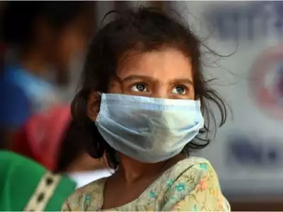

Symptoms:
COVID-19 is a respiratory condition caused by a coronavirus. Some people are infected but don’t notice any.
symptoms Most people will have mild symptoms and get better on their own.
But about 1 in 6 will have severe problems, such as trouble breathing.
COMMON SYMPTOMS:
Researchers in China found that the most common symptoms among people,
who were hospitalized with COVID-19 include:
-
Fever: 99%
- Fatigue:70%
- A dry cough: 59%
- Loss of appetite: 40%
- Body aches: 35%
- Shortness of breath: 31%
- Mucus or phlegm: 27%
Other symptoms include:
- Sore throat
- Headache
- Chills, sometimes with shaking
- Loss of smell or taste
- Stuffy nose
- Nausea or vomiting
- Diarrhea
When to see a doctor
If you have COVID-19 symptoms or you've been in contact with someone diagnosed with COVID-19,
contact your doctor or clinic right away for medical advice. Tell your health care team about your
symptoms and possible exposure before you go to your appointment.
If you have emergency COVID-19 signs and symptoms, seek care immediately.
Emergency signs and symptoms can include:
- Trouble breathing
- Persistent chest pain or pressure
- Inability to stay awake
- New confusion
- Blue lips or face
If you have signs or symptoms of COVID-19, contact your doctor or clinic for guidance.
Let your doctor know if you have other chronic medical conditions, such as heart disease or lung disease.
During the pandemic, it's important to make sure health care is available for those in greatest need.
